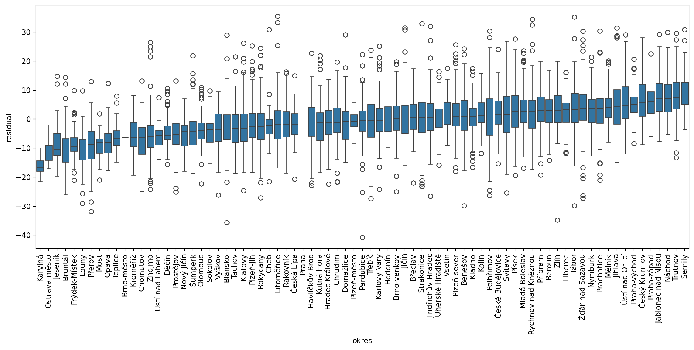
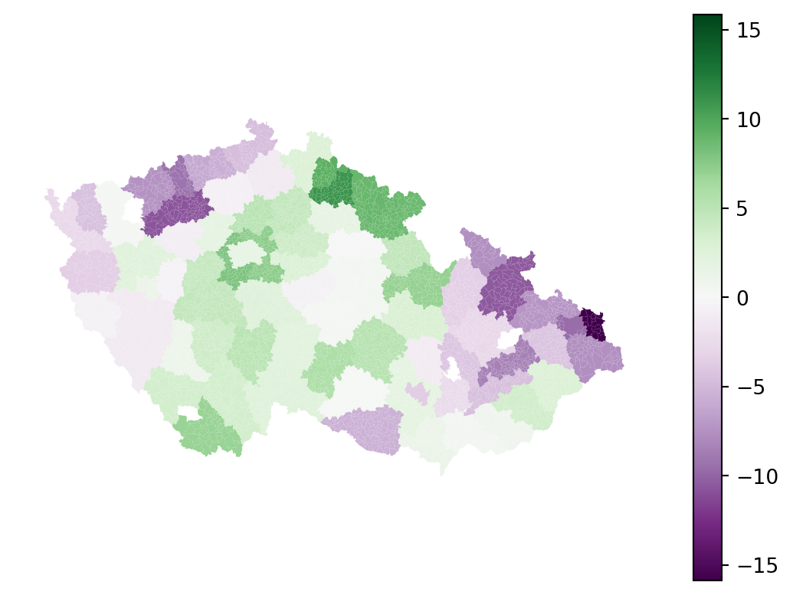
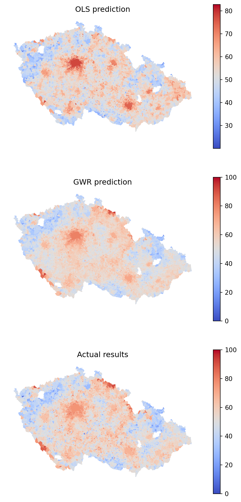
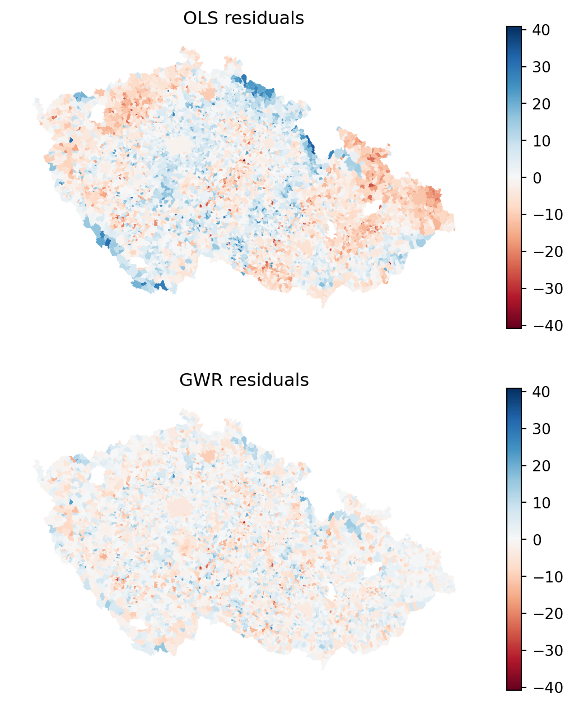
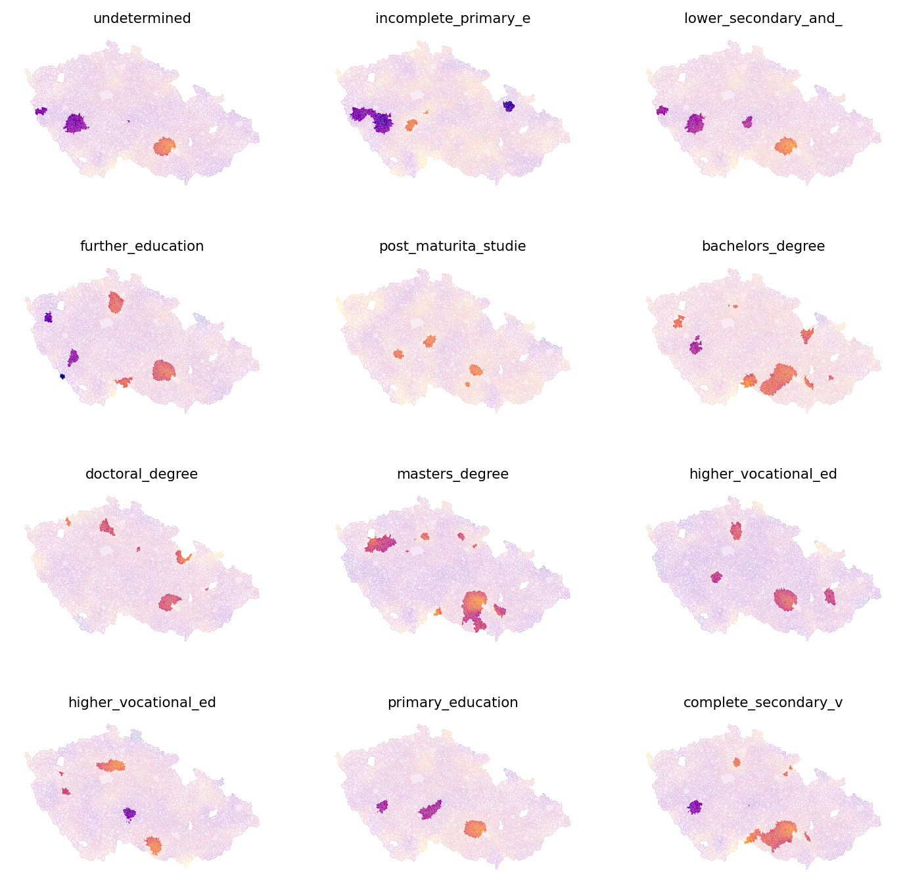

import esda
import geopandas as gpd
import matplotlib.pyplot as plt
import mgwr
import numpy as np
import pandas as pd
import seaborn as sns
import statsmodels.formula.api as sm
from libpysal import graph
from splot.esda import lisa_clusterRegression and geography
Still in works
This notebook currently requires development versions of mgwr and spglm packages specified in the environment file.
When trying to determine the effect of some (independent) variables on the outcome of phenomena (dependent variable), you often use regression to model such an outcome and understand the influence each of the variables has in the model. With spatial regression, it is the same. You just need to use the spatial dimension in a mindful way.
This chapter provides an introduction to ways of incorporating space into regression models, from spatial variables in standard linear regression to geographically weighted regression.
Data
You will work with the same data you already used in the chapter on spatial autocorrelation - the results of the second round of the presidential elections in Czechia in 2023, between Petr Pavel and Andrej Babiš, on a level of municipalities. You can read the election data directly from the chapter 5 location.
elections = gpd.read_file(
"https://martinfleischmann.net/sds/chapter_05/data/cz_elections_2023.gpkg"
)
elections = elections.set_index("name")
elections.head()| PetrPavel | AndrejBabis | nationalCode | sourceOfName | geometry | |
|---|---|---|---|---|---|
| name | |||||
| Abertamy | 62.98 | 37.01 | 554979 | Český úřad zeměměřický a katastrální | MULTIPOLYGON (((-849678.970 -996811.240, -8494... |
| Adamov (Blansko, 581291) | 57.17 | 42.82 | 581291 | Český úřad zeměměřický a katastrální | MULTIPOLYGON (((-590872.420 -1148832.360, -591... |
| Adamov (České Budějovice, 535826) | 65.17 | 34.82 | 535826 | Český úřad zeměměřický a katastrální | MULTIPOLYGON (((-748969.500 -1162820.890, -749... |
| Adamov (Kutná Hora, 531367) | 53.84 | 46.15 | 531367 | Český úřad zeměměřický a katastrální | MULTIPOLYGON (((-677775.470 -1077800.050, -677... |
| Adršpach | 62.18 | 37.81 | 547786 | Český úřad zeměměřický a katastrální | MULTIPOLYGON (((-620084.550 -999987.800, -6201... |
Alternative
Instead of reading the file directly off the web, it is possible to download it manually, store it on your computer, and read it locally. To do that, you can follow these steps:
- Download the file by right-clicking on this link and saving the file
- Place the file in the same folder as the notebook where you intend to read it
- Replace the code in the cell above with:
elections = gpd.read_file(
"cz_elections_2023.gpkg",
)The election results give you the dependent variable - you will look at the percentage of votes Petr Pavel, the winner, received. From the map of the results and the analysis you did when exploring spatial autocorrelation you already know that there are some significant spatial patterns. Let’s look whether these patterns correspond to the composition of education levels within each municipality.
You can use the data from the Czech Statistical Office reflecting the situation during the Census 2021. The original table has been preprocessed and is available as a CSV.
education = pd.read_csv(
"https://martinfleischmann.net/sds/chapter_10/data/education.csv"
)
education.head()| uzemi_kod | without_education | undetermined | incomplete_primary_education | lower_secondary_and_secondary_education | further_education | post_maturita_studies | bachelors_degree | doctoral_degree | masters_degree | higher_vocational_education | higher_vocational_education_in_a_conservatory | primary_education | complete_secondary_vocational_education | complete_secondary_general_education | okres | |
|---|---|---|---|---|---|---|---|---|---|---|---|---|---|---|---|---|
| 0 | 500011 | 0.570704 | 3.741281 | 1.141408 | 34.242232 | 1.775523 | 0.507292 | 2.853519 | 0.634115 | 12.935954 | 1.395054 | 0.126823 | 11.350666 | 17.945466 | 10.779962 | Zlín |
| 1 | 500020 | 0.885827 | 3.346457 | 1.968504 | 40.157480 | 2.066929 | 0.885827 | 1.771654 | 0.492126 | 6.299213 | 1.574803 | 0.000000 | 15.059055 | 16.338583 | 9.153543 | Šumperk |
| 2 | 500046 | 0.359195 | 3.232759 | 0.790230 | 39.152299 | 2.514368 | 0.790230 | 3.520115 | 0.215517 | 10.632184 | 1.364943 | 0.143678 | 9.770115 | 15.301724 | 12.212644 | Nový Jičín |
| 3 | 500062 | 0.238237 | 3.573556 | 1.072067 | 32.757594 | 2.084574 | 1.131626 | 3.037522 | 0.178678 | 13.281715 | 0.714711 | 0.119119 | 11.316260 | 18.701608 | 11.792734 | Vsetín |
| 4 | 500071 | 0.412939 | 2.890571 | 1.238816 | 34.067447 | 1.720578 | 0.757054 | 3.028217 | 0.137646 | 11.080523 | 0.894701 | 0.000000 | 9.772884 | 20.027529 | 13.971094 | Vsetín |
Alternative
Instead of reading the file directly off the web, it is possible to download it manually, store it on your computer, and read it locally. To do that, you can follow these steps:
- Download the file by right-clicking on this link and saving the file
- Place the file in the same folder as the notebook where you intend to read it
- Replace the code in the cell above with:
education = pd.read_csv(
"education.csv",
)The first thing you need to do is to merge the two tables, to have both dependent and independent variables together. The municipality code in the elections table is in the "nationalCode" column, while in the education table in the "uzemi_kod" column.
elections_data = elections.merge(education, left_on="nationalCode", right_on="uzemi_kod")
elections_data.head()| PetrPavel | AndrejBabis | nationalCode | sourceOfName | geometry | uzemi_kod | without_education | undetermined | incomplete_primary_education | lower_secondary_and_secondary_education | ... | post_maturita_studies | bachelors_degree | doctoral_degree | masters_degree | higher_vocational_education | higher_vocational_education_in_a_conservatory | primary_education | complete_secondary_vocational_education | complete_secondary_general_education | okres | |
|---|---|---|---|---|---|---|---|---|---|---|---|---|---|---|---|---|---|---|---|---|---|
| 0 | 62.98 | 37.01 | 554979 | Český úřad zeměměřický a katastrální | MULTIPOLYGON (((-849678.970 -996811.240, -8494... | 554979 | 0.435414 | 11.030479 | 1.741655 | 37.010160 | ... | 1.161103 | 1.306241 | 0.290276 | 5.950653 | 0.580552 | 0.00000 | 21.335269 | 8.998549 | 9.579100 | Karlovy Vary |
| 1 | 57.17 | 42.82 | 581291 | Český úřad zeměměřický a katastrální | MULTIPOLYGON (((-590872.420 -1148832.360, -591... | 581291 | 0.377766 | 5.153805 | 1.052348 | 34.592553 | ... | 0.782515 | 2.725310 | 1.187264 | 11.171074 | 1.349164 | 0.08095 | 11.359957 | 17.539126 | 11.225040 | Blansko |
| 2 | 65.17 | 34.82 | 535826 | Český úřad zeměměřický a katastrální | MULTIPOLYGON (((-748969.500 -1162820.890, -749... | 535826 | 0.269542 | 3.234501 | 0.943396 | 23.450135 | ... | 0.673854 | 4.582210 | 1.482480 | 23.450135 | 2.156334 | 0.00000 | 7.547170 | 17.250674 | 13.477089 | České Budějovice |
| 3 | 53.84 | 46.15 | 531367 | Český úřad zeměměřický a katastrální | MULTIPOLYGON (((-677775.470 -1077800.050, -677... | 531367 | 0.000000 | 3.508772 | 1.754386 | 44.736842 | ... | 0.877193 | 2.631579 | 0.000000 | 5.263158 | 0.000000 | 0.00000 | 7.017544 | 20.175439 | 13.157895 | Kutná Hora |
| 4 | 62.18 | 37.81 | 547786 | Český úřad zeměměřický a katastrální | MULTIPOLYGON (((-620084.550 -999987.800, -6201... | 547786 | 0.744417 | 8.188586 | 0.992556 | 39.702233 | ... | 0.496278 | 2.729529 | 0.248139 | 6.451613 | 0.000000 | 0.00000 | 12.903226 | 13.895782 | 12.406948 | Náchod |
5 rows × 21 columns
That is all sorted and ready to be used in a regression.
Non-spatial linear regression
Before jumping into spatial regression, let’s start with the standard linear regression. A useful start is to explore the data using an ordinary least squares (OLS) linear regression model.
OLS model
While this course is not formula-heavy, in this case, it is useful to use the formula to explain the logic of the algorithm. The OLS tries to model the dependent variable \(y\) as the linear combination of independent variables \(x_1, x_2, ... x_n\):
\[y_{i}=\alpha+\beta _{1}\ x_{i1}+\beta _{2}\ x_{i2}+\cdots +\beta _{p}\ x_{ip}+\varepsilon _{i}\]
where \(\epsilon_{i}\) represents unobserved random variables and \(\alpha\) represents an intercept - a constant. You know the \(y_i\), all of the \(x_i\) and try to estimate the coefficients. In Python, you can run linear regression using implementations from more than one package (e.g., statsmodels, scikit-learn, spreg). This course covers statsmodels approach as it has a nice API to work with.
First, you need a list of names of independent variables. That is equal to column names without a few of the columns that represent other data.
independent_names = education.columns.drop(["uzemi_kod", "okres"])
independent_namesIndex(['without_education', 'undetermined', 'incomplete_primary_education',
'lower_secondary_and_secondary_education', 'further_education',
'post_maturita_studies', 'bachelors_degree', 'doctoral_degree',
'masters_degree', 'higher_vocational_education',
'higher_vocational_education_in_a_conservatory', 'primary_education',
'complete_secondary_vocational_education',
'complete_secondary_general_education'],
dtype='object')statsmodels (above imported as sm) offers an intuitive formula API to define the linear regression.
1formula = f"PetrPavel ~ {' + '.join(independent_names)}"
formula- 1
-
In the formula, specify the dependent variable (
"PetrPavel") as a function of ("~") independent variables ("undetermined + incomplete_primary_education + ...").
'PetrPavel ~ without_education + undetermined + incomplete_primary_education + lower_secondary_and_secondary_education + further_education + post_maturita_studies + bachelors_degree + doctoral_degree + masters_degree + higher_vocational_education + higher_vocational_education_in_a_conservatory + primary_education + complete_secondary_vocational_education + complete_secondary_general_education'With the formula ready, you can fit the model and estimate all betas and \(\varepsilon\).
ols = sm.ols(formula, data=elections_data).fit()The ols object offers a handy summary() function providing most of the results from the fitting in one place.
ols.summary()| Dep. Variable: | PetrPavel | R-squared: | 0.423 |
| Model: | OLS | Adj. R-squared: | 0.422 |
| Method: | Least Squares | F-statistic: | 352.6 |
| Date: | Mon, 20 Nov 2023 | Prob (F-statistic): | 0.00 |
| Time: | 22:24:18 | Log-Likelihood: | -22397. |
| No. Observations: | 6254 | AIC: | 4.482e+04 |
| Df Residuals: | 6240 | BIC: | 4.492e+04 |
| Df Model: | 13 | ||
| Covariance Type: | nonrobust |
| coef | std err | t | P>|t| | [0.025 | 0.975] | |
| Intercept | 0.1283 | 0.006 | 19.748 | 0.000 | 0.116 | 0.141 |
| without_education | 0.3621 | 0.093 | 3.914 | 0.000 | 0.181 | 0.543 |
| undetermined | 0.1879 | 0.041 | 4.542 | 0.000 | 0.107 | 0.269 |
| incomplete_primary_education | -0.0881 | 0.119 | -0.737 | 0.461 | -0.322 | 0.146 |
| lower_secondary_and_secondary_education | 0.2890 | 0.013 | 21.435 | 0.000 | 0.263 | 0.315 |
| further_education | 0.9665 | 0.116 | 8.312 | 0.000 | 0.739 | 1.194 |
| post_maturita_studies | 1.3528 | 0.204 | 6.635 | 0.000 | 0.953 | 1.752 |
| bachelors_degree | 1.1634 | 0.092 | 12.581 | 0.000 | 0.982 | 1.345 |
| doctoral_degree | 1.2223 | 0.220 | 5.550 | 0.000 | 0.791 | 1.654 |
| masters_degree | 1.1231 | 0.036 | 31.201 | 0.000 | 1.053 | 1.194 |
| higher_vocational_education | 1.7312 | 0.132 | 13.124 | 0.000 | 1.473 | 1.990 |
| higher_vocational_education_in_a_conservatory | 2.7664 | 0.577 | 4.796 | 0.000 | 1.636 | 3.897 |
| primary_education | 0.0723 | 0.033 | 2.213 | 0.027 | 0.008 | 0.136 |
| complete_secondary_vocational_education | 0.8683 | 0.032 | 27.316 | 0.000 | 0.806 | 0.931 |
| complete_secondary_general_education | 0.8121 | 0.038 | 21.247 | 0.000 | 0.737 | 0.887 |
| Omnibus: | 130.315 | Durbin-Watson: | 1.981 |
| Prob(Omnibus): | 0.000 | Jarque-Bera (JB): | 215.929 |
| Skew: | 0.189 | Prob(JB): | 1.29e-47 |
| Kurtosis: | 3.828 | Cond. No. | 5.74e+17 |
Notes:
[1] Standard Errors assume that the covariance matrix of the errors is correctly specified.
[2] The smallest eigenvalue is 4.03e-29. This might indicate that there are
strong multicollinearity problems or that the design matrix is singular.
It is clear that education composition has a significant effect on the outcome of the elections but can explain only about 42% of its variance (adjusted \(R^2\) is 0.422). A higher amount of residents with only primary education tends to lower Pavel’s gain while a higher amount of university degrees tends to increase the number of votes he received. That is nothing unexpected. However, let’s make use of geography and unpack these results a bit.
Spatial heterogeneity
Not all areas behave equally, it seems that some systematically vote for Pavel more than for Babiš while others vote for him less. You need to account for this when building a regression model. One way is by capturing spatial heterogeneity. It implicitly assumes that the outcome of the model spatially varies. You can expect \(\alpha\) to vary across space, or individual values of \(\beta\). Spatial fixed effects capture the former.
Spatial fixed effects
You need to find a way to let \(\alpha\) change across space. One option is through the proxy variable capturing higher-level geography. You have information about okres (the closest translation to English would probably be district or county) each municipality belongs to. Let’s start by checking if that could be useful by visualising residuals within each. While you can use the box plot directly, it may be better to sort the values by median residuals, so let’s complicate the code a bit.
1medians = (
elections_data.groupby("okres")
.residual.median()
.to_frame("okres_residual")
)
f, ax = plt.subplots(figsize=(16, 6))
2sns.boxplot(
3 data=elections_data.merge(
medians, how="left", left_on="okres", right_index=True
4 ).sort_values("okres_residual"),
5 x="okres",
6 y="residual",
)
7_ = plt.xticks(rotation=90)- 1
-
Get median residual value per okres using
groupbyand convert the resultingSeriestoDataFrameto be able to merge it with the original data. - 2
- Create a box plot and pass the data.
- 3
-
The data is the
elections_datatable merged with themediansthat are after merge stored as the"okres_residual"column. - 4
-
Sort by the
"okres_residual"column. - 5
- The x value should represent each okres.
- 6
- The y value should represent residuals.
- 7
- Rotate x tick labels by 90 degrees for readability.

There are clear differences among these geographies, with a gradient between median -16.5 and 8.3. In a model that does not show spatial heterogeneity across higher-level geographies like these, all medians would be close to zero. This is positive information as it indicates, that we can encode these geographies in the model as a spatial proxy. Using statsmodels, you can adapt the equation and include "okres" as a dummy variable.
1formula_fe = f"PetrPavel ~ {' + '.join(independent_names)} + okres - 1"
2ols_fe = sm.ols(formula_fe, data=elections_data).fit()- 1
-
Add
+ okres - 1, where- 1means that you’re fitting a model without an intercept. Since you are now including a categorical variable okres, that will be converted to a dummy one,statsmodelswould otherwise drop the first level (okres) to use as a reference represented by the intercept. The resulting coefficients would then reflect the difference between the intercept and the value for each okres. By omitting the intercept, the coefficient can be directly interpreted as \(\alpha\). - 2
- Fit the OLS model using the new formula.
Since every unique value in the "okres" column is now treated as a unique variable the summary is a bit longer than before.
ols_fe.summary()| Dep. Variable: | PetrPavel | R-squared: | 0.571 |
| Model: | OLS | Adj. R-squared: | 0.565 |
| Method: | Least Squares | F-statistic: | 92.21 |
| Date: | Mon, 20 Nov 2023 | Prob (F-statistic): | 0.00 |
| Time: | 22:24:34 | Log-Likelihood: | -21472. |
| No. Observations: | 6254 | AIC: | 4.312e+04 |
| Df Residuals: | 6164 | BIC: | 4.373e+04 |
| Df Model: | 89 | ||
| Covariance Type: | nonrobust |
| coef | std err | t | P>|t| | [0.025 | 0.975] | |
| okres[Benešov] | 2.5515 | 0.725 | 3.520 | 0.000 | 1.131 | 3.972 |
| okres[Beroun] | 4.3517 | 0.834 | 5.219 | 0.000 | 2.717 | 5.986 |
| okres[Blansko] | -1.0237 | 0.723 | -1.416 | 0.157 | -2.441 | 0.393 |
| okres[Brno-město] | -3.6810 | 7.473 | -0.493 | 0.622 | -18.331 | 10.968 |
| okres[Brno-venkov] | 1.9413 | 0.593 | 3.276 | 0.001 | 0.779 | 3.103 |
| okres[Bruntál] | -10.4042 | 0.938 | -11.094 | 0.000 | -12.243 | -8.566 |
| okres[Břeclav] | 1.2036 | 0.957 | 1.258 | 0.209 | -0.673 | 3.080 |
| okres[Cheb] | -2.6902 | 1.204 | -2.234 | 0.026 | -5.051 | -0.330 |
| okres[Chomutov] | -7.3448 | 1.145 | -6.417 | 0.000 | -9.589 | -5.101 |
| okres[Chrudim] | 0.5374 | 0.744 | 0.722 | 0.470 | -0.921 | 1.996 |
| okres[Domažlice] | -0.5435 | 0.880 | -0.618 | 0.537 | -2.268 | 1.181 |
| okres[Děčín] | -4.6916 | 1.061 | -4.424 | 0.000 | -6.771 | -2.613 |
| okres[Frýdek-Místek] | -7.5664 | 0.907 | -8.345 | 0.000 | -9.344 | -5.789 |
| okres[Havlíčkův Brod] | 0.3325 | 0.717 | 0.464 | 0.643 | -1.073 | 1.738 |
| okres[Hodonín] | 0.5302 | 0.845 | 0.628 | 0.530 | -1.126 | 2.187 |
| okres[Hradec Králové] | -0.0895 | 0.755 | -0.119 | 0.906 | -1.570 | 1.391 |
| okres[Jablonec nad Nisou] | 9.3049 | 1.275 | 7.300 | 0.000 | 6.806 | 11.804 |
| okres[Jeseník] | -7.5762 | 1.537 | -4.930 | 0.000 | -10.589 | -4.564 |
| okres[Jihlava] | 5.8273 | 0.701 | 8.311 | 0.000 | 4.453 | 7.202 |
| okres[Jindřichův Hradec] | 2.4094 | 0.749 | 3.218 | 0.001 | 0.942 | 3.877 |
| okres[Jičín] | 1.7354 | 0.735 | 2.362 | 0.018 | 0.295 | 3.176 |
| okres[Karlovy Vary] | 0.3530 | 1.027 | 0.344 | 0.731 | -1.661 | 2.367 |
| okres[Karviná] | -15.8537 | 1.819 | -8.716 | 0.000 | -19.419 | -12.288 |
| okres[Kladno] | 1.9768 | 0.771 | 2.564 | 0.010 | 0.465 | 3.488 |
| okres[Klatovy] | -1.2087 | 0.791 | -1.528 | 0.126 | -2.759 | 0.342 |
| okres[Kolín] | 2.9124 | 0.809 | 3.602 | 0.000 | 1.327 | 4.498 |
| okres[Kroměříž] | -4.4764 | 0.859 | -5.212 | 0.000 | -6.160 | -2.793 |
| okres[Kutná Hora] | -0.5966 | 0.819 | -0.728 | 0.466 | -2.202 | 1.009 |
| okres[Liberec] | 2.7545 | 0.988 | 2.788 | 0.005 | 0.817 | 4.691 |
| okres[Litoměřice] | -0.6300 | 0.751 | -0.838 | 0.402 | -2.103 | 0.843 |
| okres[Louny] | -10.6715 | 0.916 | -11.655 | 0.000 | -12.466 | -8.877 |
| okres[Mladá Boleslav] | 4.5057 | 0.708 | 6.361 | 0.000 | 3.117 | 5.894 |
| okres[Most] | -9.2808 | 1.479 | -6.275 | 0.000 | -12.180 | -6.381 |
| okres[Mělník] | 5.0893 | 0.917 | 5.548 | 0.000 | 3.291 | 6.888 |
| okres[Nový Jičín] | -4.1418 | 1.032 | -4.013 | 0.000 | -6.165 | -2.119 |
| okres[Nymburk] | 3.9077 | 0.825 | 4.734 | 0.000 | 2.290 | 5.526 |
| okres[Náchod] | 8.7053 | 0.866 | 10.055 | 0.000 | 7.008 | 10.403 |
| okres[Olomouc] | -2.8127 | 0.779 | -3.613 | 0.000 | -4.339 | -1.286 |
| okres[Opava] | -7.1956 | 0.871 | -8.261 | 0.000 | -8.903 | -5.488 |
| okres[Ostrava-město] | -9.5847 | 2.088 | -4.590 | 0.000 | -13.679 | -5.491 |
| okres[Pardubice] | 0.5159 | 0.729 | 0.708 | 0.479 | -0.914 | 1.945 |
| okres[Pelhřimov] | 2.2828 | 0.709 | 3.221 | 0.001 | 0.894 | 3.672 |
| okres[Plzeň-jih] | -1.2318 | 0.772 | -1.595 | 0.111 | -2.745 | 0.282 |
| okres[Plzeň-město] | 1.2374 | 1.939 | 0.638 | 0.523 | -2.565 | 5.039 |
| okres[Plzeň-sever] | 2.3828 | 0.775 | 3.074 | 0.002 | 0.863 | 3.902 |
| okres[Prachatice] | 3.5268 | 0.943 | 3.739 | 0.000 | 1.678 | 5.376 |
| okres[Praha] | 1.5703 | 7.475 | 0.210 | 0.834 | -13.082 | 16.223 |
| okres[Praha-východ] | 7.3812 | 0.764 | 9.657 | 0.000 | 5.883 | 8.880 |
| okres[Praha-západ] | 8.0313 | 0.914 | 8.791 | 0.000 | 6.240 | 9.822 |
| okres[Prostějov] | -4.1691 | 0.780 | -5.345 | 0.000 | -5.698 | -2.640 |
| okres[Písek] | 3.7584 | 0.881 | 4.267 | 0.000 | 2.032 | 5.485 |
| okres[Přerov] | -8.5036 | 0.751 | -11.324 | 0.000 | -9.976 | -7.031 |
| okres[Příbram] | 4.5529 | 0.707 | 6.442 | 0.000 | 3.168 | 5.938 |
| okres[Rakovník] | -0.9709 | 0.840 | -1.156 | 0.248 | -2.617 | 0.675 |
| okres[Rokycany] | -0.4692 | 0.924 | -0.508 | 0.612 | -2.281 | 1.343 |
| okres[Rychnov nad Kněžnou] | 4.6060 | 0.857 | 5.376 | 0.000 | 2.927 | 6.285 |
| okres[Semily] | 10.9303 | 0.952 | 11.484 | 0.000 | 9.065 | 12.796 |
| okres[Sokolov] | -4.3738 | 1.235 | -3.542 | 0.000 | -6.795 | -1.953 |
| okres[Strakonice] | 1.0393 | 0.729 | 1.427 | 0.154 | -0.389 | 2.468 |
| okres[Svitavy] | 3.0370 | 0.724 | 4.195 | 0.000 | 1.618 | 4.456 |
| okres[Tachov] | -3.5208 | 1.078 | -3.266 | 0.001 | -5.634 | -1.408 |
| okres[Teplice] | -6.0731 | 1.296 | -4.686 | 0.000 | -8.614 | -3.532 |
| okres[Trutnov] | 8.9034 | 0.881 | 10.106 | 0.000 | 7.176 | 10.630 |
| okres[Tábor] | 5.0145 | 0.736 | 6.809 | 0.000 | 3.571 | 6.458 |
| okres[Třebíč] | 0.1759 | 0.614 | 0.286 | 0.775 | -1.027 | 1.379 |
| okres[Uherské Hradiště] | 0.8108 | 0.866 | 0.936 | 0.349 | -0.887 | 2.508 |
| okres[Vsetín] | 2.7505 | 0.990 | 2.779 | 0.005 | 0.810 | 4.691 |
| okres[Vyškov] | -2.5157 | 0.859 | -2.929 | 0.003 | -4.200 | -0.832 |
| okres[Zlín] | 3.6748 | 0.804 | 4.571 | 0.000 | 2.099 | 5.251 |
| okres[Znojmo] | -5.4760 | 0.658 | -8.320 | 0.000 | -6.766 | -4.186 |
| okres[Ústí nad Labem] | -5.6362 | 1.566 | -3.598 | 0.000 | -8.707 | -2.565 |
| okres[Ústí nad Orlicí] | 6.9769 | 0.725 | 9.621 | 0.000 | 5.555 | 8.398 |
| okres[Česká Lípa] | -1.2302 | 1.007 | -1.222 | 0.222 | -3.204 | 0.743 |
| okres[České Budějovice] | 3.5436 | 0.741 | 4.781 | 0.000 | 2.091 | 4.996 |
| okres[Český Krumlov] | 6.8514 | 1.118 | 6.129 | 0.000 | 4.660 | 9.043 |
| okres[Šumperk] | -3.4085 | 0.865 | -3.941 | 0.000 | -5.104 | -1.713 |
| okres[Žďár nad Sázavou] | 5.2729 | 0.603 | 8.750 | 0.000 | 4.092 | 6.454 |
| without_education | 0.5102 | 0.081 | 6.303 | 0.000 | 0.351 | 0.669 |
| undetermined | 0.2195 | 0.038 | 5.821 | 0.000 | 0.146 | 0.293 |
| incomplete_primary_education | 0.0568 | 0.105 | 0.542 | 0.588 | -0.149 | 0.262 |
| lower_secondary_and_secondary_education | 0.2739 | 0.013 | 21.706 | 0.000 | 0.249 | 0.299 |
| further_education | 0.7216 | 0.102 | 7.040 | 0.000 | 0.521 | 0.922 |
| post_maturita_studies | 1.1008 | 0.178 | 6.167 | 0.000 | 0.751 | 1.451 |
| bachelors_degree | 1.2063 | 0.082 | 14.732 | 0.000 | 1.046 | 1.367 |
| doctoral_degree | 0.7880 | 0.199 | 3.956 | 0.000 | 0.398 | 1.179 |
| masters_degree | 1.1071 | 0.033 | 33.305 | 0.000 | 1.042 | 1.172 |
| higher_vocational_education | 1.0217 | 0.120 | 8.547 | 0.000 | 0.787 | 1.256 |
| higher_vocational_education_in_a_conservatory | 2.5918 | 0.504 | 5.148 | 0.000 | 1.605 | 3.579 |
| primary_education | 0.2144 | 0.030 | 7.243 | 0.000 | 0.156 | 0.272 |
| complete_secondary_vocational_education | 0.8318 | 0.028 | 29.208 | 0.000 | 0.776 | 0.888 |
| complete_secondary_general_education | 0.8074 | 0.034 | 23.538 | 0.000 | 0.740 | 0.875 |
| Omnibus: | 286.683 | Durbin-Watson: | 1.974 |
| Prob(Omnibus): | 0.000 | Jarque-Bera (JB): | 766.532 |
| Skew: | 0.226 | Prob(JB): | 3.55e-167 |
| Kurtosis: | 4.655 | Cond. No. | 2.52e+18 |
Notes:
[1] Standard Errors assume that the covariance matrix of the errors is correctly specified.
[2] The smallest eigenvalue is 2.09e-30. This might indicate that there are
strong multicollinearity problems or that the design matrix is singular.
The coefficients for each of the values of the categorical variable "okres" are considered spatial fixed effects. You can extract just those from the model by getting the .params Series and filtering it.
1fixed_effects = ols_fe.params.filter(like="okres")
fixed_effects.head()- 1
-
ols_fe.paramsis apandas.Seriesthat can be filtered based on the index using thefilter()method.
okres[Benešov] 2.551453
okres[Beroun] 4.351734
okres[Blansko] -1.023745
okres[Brno-město] -3.681027
okres[Brno-venkov] 1.941320
dtype: float64You can see that if you want to join this Series to the original DataFrame, you need to extract the names of each okres from within the square brackets.
1fixed_effects.index = fixed_effects.index.str.strip(
"okres["
2).str.strip("]")
fixed_effects.head()- 1
-
Use the
.straccessor that enables you to use string methods on a Series and strip the strings of the specified characters. - 2
- Use it again to strip the closing bracket.
Benešov 2.551453
Beroun 4.351734
Blansko -1.023745
Brno-město -3.681027
Brno-venkov 1.941320
dtype: float64The resulting Series can be merged with the elections_data, allowing us to map the spatial fixed effects.
1max_effect = fixed_effects.abs().max()
2elections_data.merge(
3 fixed_effects.to_frame("fixed_effect"),
4 left_on="okres",
5 right_index=True,
6 how="left",
7).plot(
8 "fixed_effect", legend=True, vmin=-max_effect, vmax=max_effect, cmap="PRGn"
).set_axis_off()- 1
-
Identify the maximum fixed effect value based on absolute value to specify
vminandvmaxvalues of the colormap. - 2
-
Merge the
fixed_effectstoelections_data. - 3
-
Merge requires a
DataFrame, so convert it to one with a column named"fixed_effect". - 4
-
Use the column
"okres"fromelections_dataas a merge key. - 5
-
Use the index of
fixed_effectsas a merge key. - 6
-
Use the left join, keeping the structure of
elections_dataintact. - 7
-
Plot the
"fixed_effect". - 8
-
Use
max_effectto specify the extent of the colormap to ensure it had mid-point at 0.

Spatial regimes and spatial dependence
Where spatial fixed effects allow \(\alpha\) to change geographically (within each okres), spatial regimes allow \(\beta_k\) to change within the same regions. Spatial regimes cannot be done within statsmodels as they require more specialised treatment offered by the spreg package. Check the Spatial regimes sections of theSpatial Regression chapter from the Geographic Data Science with Python by Rey, Arribas-Bel, and Wolf (2023) for more details.
The same chapter also covers the modelling of spatial dependence using spreg. Both are considered advanced usage within this course but feel free to read through the materials yourself.
With spatial fixed effects, you were able to include spatial dimension in the model through a proxy variable, resulting in an improvement of adjusted \(R^2\) from 0.422 to 0.565 while also extracting the fixed effect of each okres. However, the model is still global. We are not able to determine how explanatory is education composition regionally.
Geographically weighted regression
Geographically Weighted Regression (GWR) overcomes the limitation of the OLS, which provides a single global estimate by examining how the relationship between a dependent variable and independent variable changes across different geographic locations. It does this by moving a search window through the dataset, defining regions around each regression point, and fitting a regression model to the data within each region. This process is repeated for all the sample points in the dataset, resulting in localized estimates. These local estimates can then be mapped to visualize variations in variable relationships at different locations. However, for a dataset with 6254 observations, like the one used here, GWR will fit 6254 weighted regression models. That can eventually pose a limitation when dealing with larger datasets, for which fitting the GWR can take too long.
Visually, you can imagine a spatial kernel being constructed around each location (point, specifically) where the kernel function defines its shape and bandwidth its size, as illustrated in Figure 1.


With kernels being the core of the GWR method, their specification significantly affects the resulting model. You can specify three parameters:
- Kernel shape: The shape of the curve formed by the kernel. In
mgwrpackage used here,"bisquare","gaussian", and"exponential"kernels are supported. - Kernel size: The bandwidth distance specifying how large is the moving window.
- Bandwidth adaptivity: Bandwidth can be either fixed, specified by the metric distance, where the moving window is essentially formed as a buffer around a point, or adaptive, specified by the number of nearest neighbours.
The details of the implications of the choices are beyond the scope of this lesson but are discussed in-depth by Fotheringham, Brunsdon, and Charlton (2002).
Fixed bandwidth
The method can be illustrated on a GWR using a fixed bandwidth and the default bi-square kernel.
Bandwidth selection
You may have some theoretically defined bandwidth (e.g. you know that you want to consider only locations closer than 25 km) or use cross-validation to find the optimal bandwidth programmatically. CV can be an expensive procedure as the selection procedure fits models based on different bandwidths and compares residuals to choose the one where those are minimised. mgwr has the mgwr.sel_bw.Sel_BW function that helps you with the search. But before using it (or any other mgwr function), you need to prepare the data in the correct form.
As mentioned above, the GWR assumes point locations as those are well-defined within the distance search (unlike polygons), so you need to extract centroids from geometries and get their coordinates.
1coords = elections_data.centroid.get_coordinates().values
coords- 1
- Create centroids, extract their coordinates and the underlying numpy array instead of a DataFrame.
array([[ -850410.51852285, -994320.67123109],
[ -593313.18017394, -1149911.22029507],
[ -749835.86565295, -1163643.97264363],
...,
[ -643316.42508618, -1080131.19290794],
[ -681632.98081662, -1178150.00416665],
[ -757365.40441225, -1083270.55289191]])Since mgwr is designed to work with numpy objects rather than pandas, extract both dependent and independent variables as arrays.
1y = elections_data[f"PetrPavel"].values.reshape(-1, 1)
2X = elections_data[independent_names[1:]].values- 1
- Get a column, extract its numpy representation and reshape it to an expected shape. The array should be two-dimensional.
- 2
-
Get a subset of columns and their array. Notice the omission of the first independent variable (
[1:]). Unlikestatsmodels,mgwris not able to automatically deal with the interaction effects of independent variables while having an intercept. You therefore drop the first category and use the intercept in its place.
With the data ready, you can identify the optimal bandwidth. This step may take some time (probably minutes).
- 1
- Pass in coordinates, an array with dependent variable, an array with independent variables, and specify that you want a fixed bandwidth (in meters).
- 2
- Initiate the search routine.
/home/runner/micromamba/envs/sds/lib/python3.11/site-packages/spglm/iwls.py:37: LinAlgWarning: Ill-conditioned matrix (rcond=3.94411e-21): result may not be accurate.
xtx_inv_xt = linalg.solve(xtx, xT)
/home/runner/micromamba/envs/sds/lib/python3.11/site-packages/spglm/iwls.py:37: LinAlgWarning: Ill-conditioned matrix (rcond=3.33013e-22): result may not be accurate.
xtx_inv_xt = linalg.solve(xtx, xT)
/home/runner/micromamba/envs/sds/lib/python3.11/site-packages/spglm/iwls.py:37: LinAlgWarning: Ill-conditioned matrix (rcond=8.5851e-21): result may not be accurate.
xtx_inv_xt = linalg.solve(xtx, xT)
/home/runner/micromamba/envs/sds/lib/python3.11/site-packages/spglm/iwls.py:37: LinAlgWarning: Ill-conditioned matrix (rcond=8.12331e-20): result may not be accurate.
xtx_inv_xt = linalg.solve(xtx, xT)34168.16The optimal fixed bandwidth seems to be a bit more than 34 kilometres. You can pass it to the GWR function and fit the regression.
fixed_bandwidth = mgwr.gwr.GWR(
1 coords, y, X, bw=bw, fixed=True, name_x=independent_names[1:]
)
2results = fixed_bandwidth.fit()- 1
- Pass the data and bandwidth, specify that the bandwidth is fixed and optionally pass the names of each independent variable to be used in the report.
- 2
- Fit the regression and save its results.
As before, you can use a summary method.
results.summary()===========================================================================
Model type Gaussian
Number of observations: 6254
Number of covariates: 14
Global Regression Results
---------------------------------------------------------------------------
Residual sum of squares: 472435.355
Log-likelihood: -22397.315
AIC: 44822.630
AICc: 44824.707
BIC: 417891.662
R2: 0.423
Adj. R2: 0.422
Variable Est. SE t(Est/SE) p-value
------------------------------- ---------- ---------- ---------- ----------
Intercept 36.341 9.252 3.928 0.000
undetermined -0.174 0.104 -1.676 0.094
incomplete_primary_education -0.450 0.171 -2.632 0.008
lower_secondary_and_secondary_ -0.073 0.093 -0.786 0.432
further_education 0.604 0.147 4.114 0.000
post_maturita_studies 0.991 0.223 4.433 0.000
bachelors_degree 0.801 0.131 6.124 0.000
doctoral_degree 0.860 0.237 3.624 0.000
masters_degree 0.761 0.099 7.699 0.000
higher_vocational_education 1.369 0.160 8.539 0.000
higher_vocational_education_in 2.404 0.584 4.117 0.000
primary_education -0.290 0.101 -2.878 0.004
complete_secondary_vocational_ 0.506 0.097 5.197 0.000
complete_secondary_general_edu 0.450 0.100 4.485 0.000
Geographically Weighted Regression (GWR) Results
---------------------------------------------------------------------------
Spatial kernel: Fixed bisquare
Bandwidth used: 34168.160
Diagnostic information
---------------------------------------------------------------------------
Residual sum of squares: 247794.379
Effective number of parameters (trace(S)): 828.144
Degree of freedom (n - trace(S)): 5425.856
Sigma estimate: 6.758
Log-likelihood: -20379.457
AIC: 42417.202
AICc: 42671.010
BIC: 48006.443
R2: 0.698
Adjusted R2: 0.651
Adj. alpha (95%): 0.001
Adj. critical t value (95%): 3.339
Summary Statistics For GWR Parameter Estimates
---------------------------------------------------------------------------
Variable Mean STD Min Median Max
-------------------- ---------- ---------- ---------- ---------- ----------
Intercept 15.048 111.553 -764.931 29.497 627.385
undetermined 0.094 1.214 -5.521 -0.038 8.143
incomplete_primary_e -0.001 1.522 -6.462 0.065 7.177
lower_secondary_and_ 0.146 1.142 -6.693 -0.003 7.762
further_education 0.560 1.611 -8.310 0.371 12.760
post_maturita_studie 0.873 1.685 -8.284 0.776 9.729
bachelors_degree 1.067 1.341 -10.368 0.969 11.842
doctoral_degree 1.021 2.252 -14.086 0.976 20.897
masters_degree 1.006 1.104 -3.303 0.899 7.815
higher_vocational_ed 1.085 1.548 -5.055 0.942 12.725
higher_vocational_ed 2.294 4.616 -20.167 2.498 32.132
primary_education 0.116 1.189 -7.042 -0.050 8.594
complete_secondary_v 0.624 1.180 -4.729 0.460 7.852
complete_secondary_g 0.616 1.131 -4.232 0.449 8.692
===========================================================================
The function fits GWR but also OLS for comparison and prints its results under the Global Regression Results section. You can see that the performance matches the first model done with statsmodels above. The performance of the GWR based on the adjusted \(R^2\) is 0.651, another improvement over the fixed effects OLS model. It is probably as good as it can be given the data on education can explain only a part of the election behaviour.
Apart from the global \(R^2\), GWR can report \(R^2\) per geometry, giving us further insights into where education is the driver of the election result and where you need to look for other causes.
1elections_data["local_r2"] = results.localR2
2elections_data.plot("local_r2", legend=True, vmin=0, vmax=1).set_axis_off()- 1
- Extract the array of local \(R^2\) and assign it as a column.
- 2
- Plot the values on a map. The theoretical minimum is 0 and the maximum is 1.

Higher local \(R^2\) means that the model is able to use the data at each municipality and its surrounding areas to provide a result that is closer to the actual observed gain of Petr Pavel.
You can use the new GWR model and compare its predicted results with the OLS done first and the actual results.
Code
f, axs = plt.subplots(3, 1, figsize=(7, 14))
elections_data.plot(
ols.predict(elections_data), legend=True, cmap="coolwarm", ax=axs[0]
)
elections_data.plot(
results.predy.flatten(), legend=True, cmap="coolwarm", vmin=0, vmax=100, ax=axs[1]
).set_axis_off()
elections_data.plot(
"PetrPavel", legend=True, cmap="coolwarm", vmin=0, vmax=100, ax=axs[2]
)
axs[0].set_title("OLS prediction")
axs[1].set_title("GWR prediction")
axs[2].set_title("Actual results")
axs[0].set_axis_off()
axs[1].set_axis_off()
axs[2].set_axis_off()
It is clear that the model is getting closer. Notice especially the mountains in the southwest and north of the country. You can check this even better by plotting residuals.
Code
f, axs = plt.subplots(2, 1, figsize=(7, 8))
elections_data.plot(
"residual",
legend=True,
cmap="RdBu",
vmin=-max_residual,
vmax=max_residual,
ax=axs[0],
)
elections_data.plot(
results.resid_response.flatten(),
legend=True,
cmap="RdBu",
vmin=-max_residual,
vmax=max_residual,
ax=axs[1],
)
axs[0].set_title("OLS residuals")
axs[1].set_title("GWR residuals")
axs[0].set_axis_off()
axs[1].set_axis_off()
Apart from localised \(R^2\), GWR also contains localised \(\beta_k\) coefficients. While you can plot them directly (they are available as results.params), you should also understand whether the coefficients are statistically significant. For that, you first need to understand what is the critical value of \(t\). It is reported in the summary above but not available as an attribute.
The results object contains the adjusted alpha values for 0.1, 0.05 and 0.01 levels of significance:
results.adj_alphaarray([1.69052693e-03, 8.45263464e-04, 1.69052693e-05])You can use the selected alpha value together with the results.critical_tval() method to get the critical value of \(t\).
- 1
- Select 0.05 level of significance.
- 2
- Derive \(t\).
3.339151343631635If a coefficient estimate has an absolute value of \(t\) greater than 3.33, then it is statistically significant. You can use this level to mask out the coefficients on the maps below making a distinction between significant and non-significant values.
significant = np.abs(results.tvalues) > critical_t
fig, axs = plt.subplots(4, 3, figsize=(9, 9))
axs = axs.flatten()
for i, name in enumerate(independent_names[1:-1]):
significant_mask = significant[:, i + 1]
elections_data.plot(results.params[:, i + 1], cmap="plasma", ax=axs[i])
elections_data[~significant_mask].plot(color="white", ax=axs[i], alpha=.9)
axs[i].set_title(name[:20], fontdict={'fontsize': 8})
axs[i].set_axis_off()
It seems that the coefficients are significant only in some areas, so you need to be careful when drawing conclusions here. This can be due to a lack of relationship or a small sample size. Try for yourself how the significance changes if you increase the bandwidth. But be careful as too large a bandwidth may miss regional differences and a bandwidth that would cover the whole country would be equal to the OLS model.
Adaptive bandwidth
If you’d like to use the adaptive bandwidth, you can use same tools. Just specify fixed=False in both Sel_BW and GWR.
sel_bw = mgwr.sel_bw.Sel_BW(coords, y, X, fixed=False)
bw = sel_bw.search()adaptive = mgwr.gwr.GWR(coords, y, X, bw=bw, fixed=False, name_x=independent_names[1:])
results_adaptive = adaptive.fit()
Additional reading
Have a look at the chapter Spatial Regression from the Geographic Data Science with Python by Rey, Arribas-Bel, and Wolf (2023) for more details and some other extensions.
If you’d like to learn the details of GWR, Geographically Weighted Regression by Fotheringham, Brunsdon, and Charlton (2002) is a good start.
Acknowledgements
References
Fotheringham, A Stewart, Chris Brunsdon, and Martin Charlton. 2002. Geographically Weighted Regression: The Analysis of Spatially Varying Relationships. John Wiley & Sons.
Rey, Sergio, Dani Arribas-Bel, and Levi John Wolf. 2023. Geographic Data Science with Python. Chapman & Hall/CRC Texts in Statistical Science. London, England: Taylor & Francis.
Rowe, Francisco, and Daniel Arribas-Bel. 2023. “Spatial Modelling for Data Scientists.” https://smds-book.github.io/smds/.